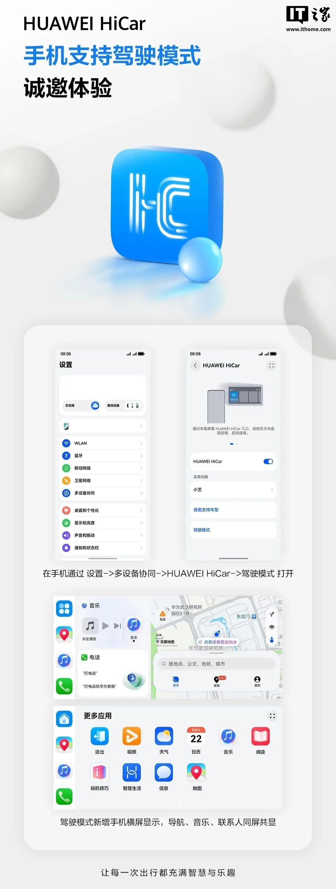
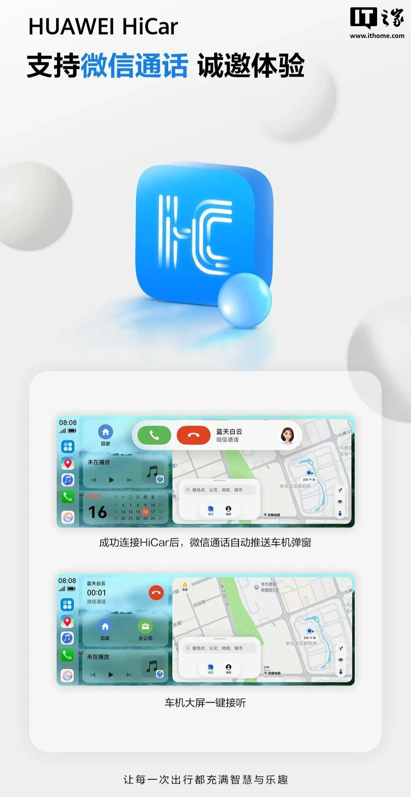

업데이트 정보
IT소식에 따르면 Huawei HiCar가 올해 7월 말 Huawei 앱 갤러리(App Gallery)를 통해 7.0.0.300 (70000300) 정식 버전 업데이트를 배포했습니다. 이번 신규 버전은 모바일 기기에서 직접 주행 모드를 실행할 수 있는 기능을 지원합니다.
주행 모드 및 가로 화면 지원
실제 테스트 결과, 최신 버전의 HiCar를 업데이트한 후 사용자는 모바일 기기에서 즉시 주행 모드를 시작할 수 있습니다. 특히 이번 업데이트를 통해 제공되는 주행 모드는 가로 화면을 지원하여 더욱 편리한 사용자 경험을 제공합니다.
Huawei 공식 안내에 따르면, Huawei HiCar의 모바일용 가로 화면 주행 모드는 버그가 아닌 이번 업데이트를 통해 추가된 신규 기능이며, 내비게이션, 음악, 연락처 등의 기능을 한 화면에 동시에 표시할 수 있습니다.
통화 편의성
또한, Huawei HiCar는 WeChat 통화 기능을 지원합니다. WeChat 통화 시 차량 시스템으로 자동 팝업이 전송되며, 대형 화면에서 버튼 하나로 전화를 받을 수 있는 기능이 포함되었습니다.
총평
Huawei HiCar의 최신 업데이트를 통해 모바일 기기에서의 주행 모드 접근성이 향상되었으며 가로 화면 지원과 멀티태스킹 기능이 강화되었습니다. 특히 WeChat 통화와의 연동을 통해 차량 내에서 더욱 편리한 환경을 제공하는 것이 특징입니다.
版本更新信息
Huawei HiCar 已于 7 月底在 Huawei 应用市场（App Gallery）推出 7.0.0.300 (70000300) 正式版本。
核心功能亮点
本次更新主要针对手机端交互与车机联动进行了优化：
- 支持在手机端直接启动驾驶模式。
- 新增横屏驾驶模式，支持导航、音乐、联系人等功能的同屏共显。
- 微信通话功能支持自动推送车机弹窗，并支持大屏一键接听。
总结
Huawei HiCar 7.0.0.300 版本通过引入手机端直接启动驾驶模式和横屏共显功能，显著提升了用户在移动端的操作体验。同时，微信通话的自动弹窗与一键接听功能也得到了增强。
アップデート情報
ITニュースによると、Huawei HiCarは今年7月末にHuawei App Galleryを通じて正式バージョンをリリースしました。
- バージョン：7.0.0.300 (70000300)
この新バージョンでは、モバイルデバイスから直接走行モードを実行できる機能がサポートされています。
走行モードと横画面対応
実機テストの結果、最新バージョンのHiCarにアップデートすることで、ユーザーはモバイルデバイスから即座に走行モードを開始できるようになりました。特に今回のアップデートで提供される走行モードは横画面に対応しており、より快適なユーザー体験を提供します。
Huaweiの公式案内によると、モバイル向けの横画面走行モードはバグではなく、今回のアップデートで追加された新機能です。以下の機能を1つの画面に同時に表示することが可能です。
- ナビゲーション
- 音楽
- 連絡先
通話の利便性
さらに、Huawei HiCarはWeChat通話機能をサポートしています。WeChatでの通話時に車両システムへ自動でポップアップが通知され、大型画面上でボタン一つで電話に出られる機能が含まれています。
まとめ
今回のHuawei HiCarのアップデートにより、モバイルデバイスからの走行モードへのアクセス性が向上し、横画面対応やマルチタスク機能が強化されました。特にWeChat通話との連携により、車内での利便性が大幅に向上しています。
Update Information
According to IT news, Huawei HiCar released the official version 7.0.0.300 (70000300) through the Huawei App Gallery in late July. This new version supports a feature that allows users to launch "Driving Mode" directly from their mobile devices.
- Version: 7.0.0.300 (70000300)
Driving Mode and Landscape Support
Testing confirms that after updating to the latest version of HiCar, users can immediately activate Driving Mode on their mobile devices. This update specifically includes landscape orientation support to provide a more convenient user experience.
According to official guidance from Huawei, the landscape-oriented Driving Mode for mobile is a new feature added in this update rather than a bug fix. It allows multiple functions to be displayed simultaneously on one screen:
- Navigation
- Music
- Contacts
Call Convenience
Additionally, Huawei HiCar supports WeChat calling features. When a WeChat call is received, an automatic pop-up is sent to the vehicle system, allowing users to answer the call with a single button on the large display.
Summary
The latest update to Huawei HiCar enhances mobile accessibility by introducing a dedicated Driving Mode that supports landscape orientation and multitasking. It also improves in-vehicle convenience through seamless integration with WeChat calling features.



